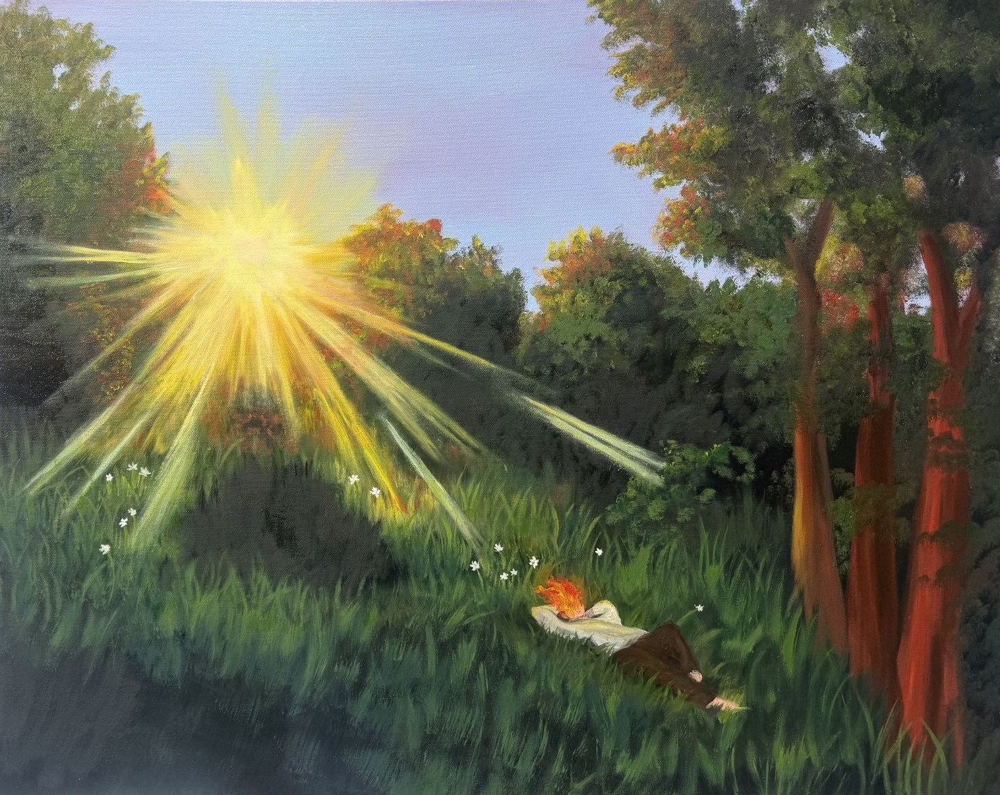

Kid:
But why does any of it matter
if nothing big really happens?
Parent: I don’t think it’s supposed to be big.
Kid: Then what is it supposed to be?
Parent:
Mostly just… regular.
The same stuff over and over.
Kid: That sounds boring.
Parent:
Yeah.
But that’s where it actually works.
Kid: Works how?
Parent:
I don’t know.
It just stops feeling like a problem.
Anyway—
I gotta water this plant.